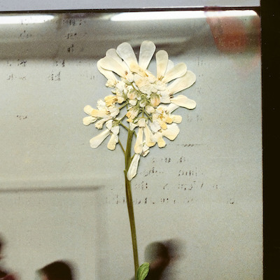

It’s been seven years since the release of “Not to Disappear,” a sophomore album that solidified the group as a powerhouse in indie rock, fighting off any criticisms of one-dimensionality they received early on in their career. The release showcased Elena Tonra’s strength as a writer and her ability to step outside of the box many had put them in, especially following the popularity of “Youth,” an era defining song, no matter what opinion you hold of it.
The group took their time, with no real reason to rush out new material following the success of the album. In 2017 they released “Music from Before the Storm” a soundtrack for the video game “Life is Strange: Before the Storm” and in 2018 Elena released a self-titled solo record under the name “Ex:Re.” The few years following they were more quiet, giving few hints of what was to come. It wasn’t until the beginning of 2023 when we were given “Be On Your Way,” followed by a three month album rollout and two additional singles.
“Stereo Mind Game” sees Daughter once again work to navigate the box that many place them in. And Elena does so by blending both new and staple sounds, not stepping or jumping out but weaving around, collecting what works and adding the sounds that fans have patiently waited seven years to hear again.
On “Be On Your Way,” Elena is starting the album with a sort of blissful ignorance. She plays with the cliched themes of a breakup song but twists her feelings into optimism. Comparable to the pandemic-tendency to convince ourselves that everything is temporary. Distance has driven these two people apart but there’s acceptance in moving on and hope that they’ll meet again.
“Party,” the second single, sees Elena reflect on her relationship with alcohol and decision to be sober. A direct link to the album’s name, she paints the image of her internal monologues, “I creep the volume up, I’ve gotta drown myself out / She’s a rattlesnake / Some stereo mind game I play with myself.” The purposeful filling up of every corner of the mind to avoid the realities of a situation.

“Neptune” provides fans with a familiar Daughter experience featuring melancholy vocals over a driving and progressive instrumental that builds in tension across five minutes, leading to a release that leaves you numb and uncomfortable. Following the track are “Swim Back” and “Junkmail,” two highlights on the track list. In her head she’s searching for justification “Find a hole in the ocean / Swim backwards.” Bargaining for a solution, “I have you in the pictures / I’ve held you in the plan.” Juxtaposed with “Junkmail” the optimism is lost “Are you a page now, babe? / Should I pay for viewing your faint lookalike?” The magic is lost and the inability to create what was there before is now obvious. Elena’s nearly spoken-word delivery of the strewn together phrases creates an uncanny feeling. A pouring out of thoughts trapped inside a head for too long.
The following three tracks see two sides to the story through the playfulness of “Future Lover” and the bleak, moody atmosphere on “Isolation,” held together by an instrumental possibly meant to invoke feelings of nostalgia and warmth. These dueling emotions lead into “To Rage,” a standout on the track list that displays anger in a way we’ve seen before with the band. The constant, driving, monotone nature of Elena’s voice alongside a gradually building instrumental that works as a final breath out, releasing tension and leading into a closing track that provides a sort of respite.
While “Stereo Mind Game” may not see the band pushed to their limits as much as on “Not To Disappear,” we’re still given an album filled with their strengths and with the ability to grow overtime. The themes of distance and water strewn throughout the record give testament to Elena’s ability as a writer to tackle emotion in exceptionally unique ways.